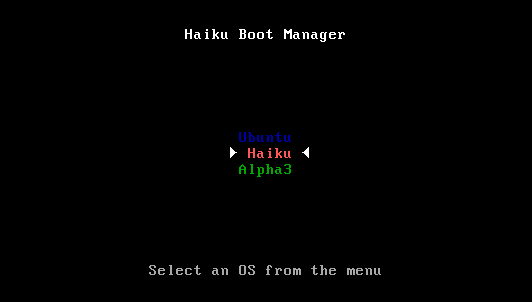

Rendszerválasztó (BootManager)
| Asztalsáv: | Nincs bejegyzés, normál esetben a Telepítő menüjéből érhető el. | |
| Útvonal: | /boot/system/apps/BootManager | |
| Beállítások: | Nincs. Az MBR biztonsági mentései alapértelmezetten a ~/config/settings/bootman/ mappában találhatóak. |
Ha a Haiku-t nem egy már létező menühöz adod hozzá (például a GRUB-hoz), akkor ezzel a programmal telepíthetünk egy egyszerű menüt a fő rendszertöltőbe (MBR), ami nagyjából így néz ki:
A program végig utasításokat ad, hogy mit és hogyan is csináljunk.
 A cél lemez kiválasztása
A cél lemez kiválasztása
A Rendszerválasztó indítása után a listában megjelenik az összes elérhető lemez, ahonnan ki kell választanunk azt, ahová telepíteni szeretnénk a menüt. Ha már létezik a kiválasztott lemezen egy menü, akkor az gomb aktívvá válik, így lehetőségünk van a fő rendszertöltőt (MBR) visszaállítáani, vagyis a menüt törölni.
Egyébként válasszuk a gombot.
A fő rendszertöltő (MBR) biztonsági másolata
Arra az esetre, ha valami probléma történik, és el akarjuk távolítani a menüt, az eredeti fő rendszertöltőről (MBR) most készül egy biztonsági mentés. Ez nyilván egy igen fontos lépés, így bizonyosodj meg róla, hogy nem írsz felül egy másik biztonsági mentést, mert arra is szükséged lehet!
Csak meg kell adni, hogy hová mentsük a biztonsági fájlt (MBR) vagy az alapból megadottat is meghagyhatjuk. Miután a re kattintunk, kapni fogunk egy megerősítést, hogy sikeres lett-e a mentés.
A menü beállítása
A program felsorolja az összes elérhető partíciót a lemezünkön. Jelöljük be azokat, amiket szeretnénk a menüben látni, és szükség esetén a megjelenítendő nevet is módosítsuk, mely alap esetben a lemez/partíció neve.
Következő lépésként a menüből válaszuk ki, hogy melyik rendszer induljon el automatikusan, és adjuk meg, hogy mennyi legyen a késleltetés az indítás előtt. Itt az "Azonnal" a menüt egy az egyben ki is hagyja, a "Soha" pedig megáll a menüben. A beállított késleltetést felül is bírálhatjuk az ALT billentyű lenyomva tartásával.
A menü felírása
Mielőtt a menü felírásra kerül, kapunk egy összesítést a választott beállításokról, és egy utolsó esélyt, hogy megszakítsuk a műveletet. Ne aggódj, addig nincs semmi probléma, amíg az eredeti fő rendszertöltőről (MBR) biztonságban van a készített másolat, így bámikor visszaállítható az. Ha probléma adódik, akkor még mindig lehetőségünk van telepítő CD-ről vagy USB-ről visszaállítani a biztonsági mentést.
Restoring the backup of the Master Boot Record (MBR)
It's currently not possible to uninstall the boot menu with the BootManager application. There is a workaround however: You can use the dd command in Terminal to restore the backup of the MBR.
Be very careful and check especially the device path parameter!
The dd commandline is something like this:
dd if=/boot/home/config/settings/bootman/MBR of=/dev/disk/[...]/raw
The input parameter ("if") is the path to the backup of the MBR.
The output parameter ("of") is the path to the raw disk the MBR will be written to. You find all devices and their paths in the DriveSetup application.